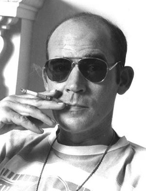

|

Hunter S. ThompsonAbout the Gonzo Reporter |
|---|
Hunter Stockton Thompson (July 18, 1937 – February 20, 2005) was an American journalist and author, and the founder of the gonzo journalism movement. Born in Louisville, Kentucky, to a middle-class family, Thompson had a turbulent youth after the death of his father left the family in poverty. He was unable to formally finish high school as he was incarcerated for 60 days after abetting a robbery. He subsequently joined the United States Air Force before moving into journalism. He traveled frequently, including stints in California, Puerto Rico, and Brazil, before settling in Aspen, Colorado, in the early 1960s. |
Thompson became internationally known with the publication of Hell's Angels: The Strange and Terrible Saga of the Outlaw Motorcycle Gangs (1967). For his research on the book he had spent a year living and riding with the Angels, experiencing their lives and hearing their stories first-hand. Previously a relatively conventional journalist, with the publication in 1970 of The Kentucky Derby Is Decadent and Depraved he became a counter cultural figure, with his own brand of New Journalism which he termed "Gonzo", an experimental style of journalism where reporters involve themselves in the action to such a degree that they become central figures of their stories. The work he remains best known for, Fear and Loathing in Las Vegas: A Savage Journey to the Heart of the American Dream (1971), constitutes a rumination on the failure of the 1960s counterculture movement. It was first serialized in Rolling Stone, a magazine with which Thompson would be long associated, and was released as a film starring Johnny Depp and Benicio del Toro and directed by Terry Gilliam in 1998. |
Politically minded, Thompson ran unsuccessfully for sheriff of Pitkin
County, Colorado, in 1970, on the Freak Power ticket. He became well
known for his inveterate hatred of Richard Nixon, who he claimed
represented "that dark, venal, and incurably violent side of the American
character" and whom he characterized in Fear and Loathing on the Campaign
Trail '72. Thompson's output notably declined from the mid-1970s, as he
struggled with the consequences of fame, and he complained that he could
no longer merely report on events as he was too easily recognized. He
was also known for his lifelong use of alcohol and illegal drugs, his
love of firearms, and his iconoclastic contempt for authoritarianism.
He remarked: |
After a bout of health problems, Thompson committed suicide at the age
of 67. In accordance with his wishes, his ashes were fired out of a cannon
in a ceremony funded by his friend Johnny Depp and attended by friends
including then-Senator John Kerry and Jack Nicholson. Hari Kunzru wrote
that |
"There he goes. One of God's own prototypes. A high-powered mutant of some kind never even considered for mass production. Too weird to live, and too rare to die." |
| Sourced from the Wikipedia page for Hunter S. Thompson |
| Click here to contact me! |
| Back to top of page |